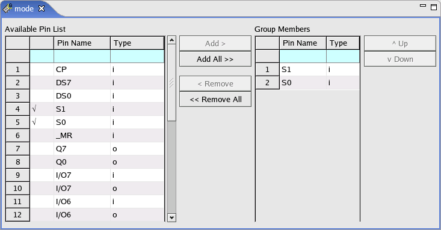
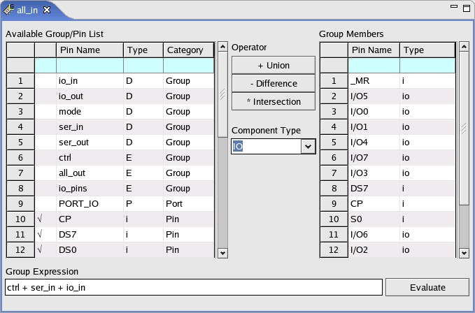

Pin group editor
In this editor, you can select group members for a group.
There are two types of groups which differ in the way they are set up:
- Fixed groups
- Expression-based groups
Fixed groups
These are basic groups which only consist of digital pins and pin aliases as group members.
The following picture shows a fixed group mode which has two members: S1 and S2. In the Available Pin List, the "√" character preceding with the pin name means that this pin has been added to mode.

Expression-based groups
These are groups which consist of digital pins, pin aliases, and/or other groups (digital fixed or expression-based) and support group arithmetic. Expression-based groups are defined by so-called group expressions, like, for example,
(group1 + pin1 + pin4 + group3) * group2
The evaluation of the group expression results in the actual pins contained in the group.
The following group operations are supported (A, B, C and D are groups, a, b and c are pins)
- UNION (+):
A = (a + b + a) => A= {a,b} - DIFFERENCE (-):
B = A - a => B = {b} - INTERSECTION (*):
C = A * B => C = {b} - Nested expressions:
D = ((A - b) + (C + c)) => D = {a, b, c}
The following picture shows an expression based group all_in including
group ctrl, ser_in and io_in.

The Component Type list determines the type (I, O , IO and DC) of active pins in the group.
I |
All input and IO pins of the evaluated expression are inserted into the Group Members area. Output and DC pins are inserted as inactive input pins. |
O |
All output and IO pins of the evaluated expression are inserted into the Group Members area. Input and DC pins are inserted as inactive output pins. |
IO |
All input, output and IO pins of the evaluated expression are inserted into the Group Members area. DC pins are inserted as inactive IO pins. |
DC |
All DC pins of the evaluated expression are inserted into the Group Members area. Input, output and IO pins are inserted as inactive DC pins. |
In the Available Group/Pin List:
- The "√" character marks the pin added to the group.
- The Type column identifies the type of each pin (I, O and IO) and
each group (D and E).
D
Digital fixed groups
E
Expression-based groups
In the Group Members area, the "*" character in the Type column marks the inactive members, whose types are different with the one shown in the Component Type list.
Functional changes
- Introduced before SmarTest 6.3.2
- SmarTest 6.5.3: When a pin group is created, the pin alias can be added as a group member.